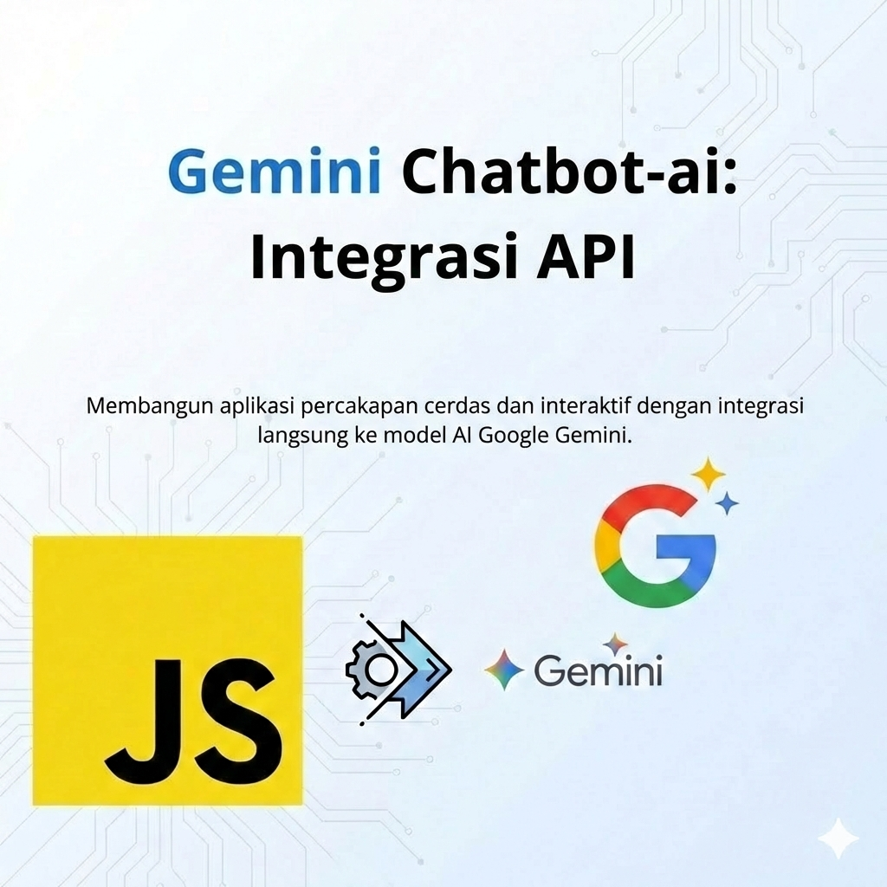

AI API Integration
Gemini AI API Project
Eksperimen integrasi backend dengan Gemini API
Project ini berfokus pada cara memanggil Gemini API dari backend, mengelola API key dengan aman, dan menyusun wrapper function yang mudah digunakan oleh layer aplikasi lain.
Gemini API
Node.js
Backend

Fitur utama
- Wrapper backend untuk memanggil Gemini API.
- Konfigurasi API key melalui environment variable.
- Penanganan error sederhana saat request gagal.
Tech stack
- Node.js sebagai backend.
- HTTP client (fetch/axios) untuk memanggil Gemini.